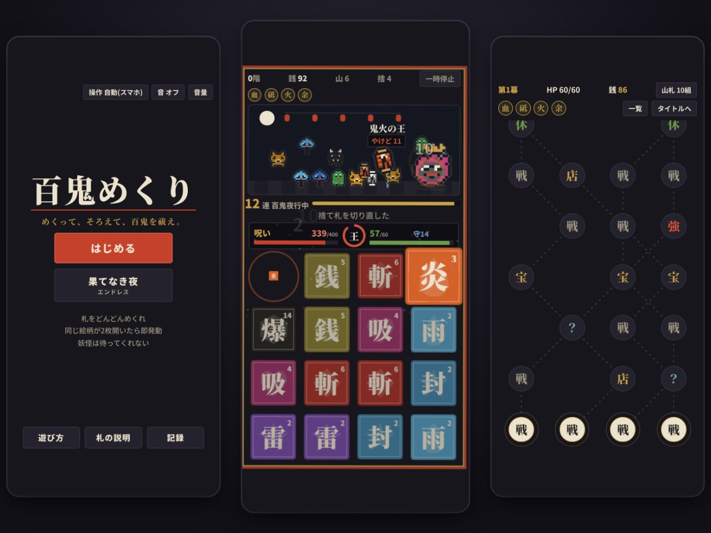

GAME
百鬼めくり
めくって、そろえて、物の怪を祓え。

| ジャンル | 札合わせローグライク（神経衰弱 × ローグライク） |
|---|---|
| 制作ツール | HTML ／ JavaScript |
| AIの使用 | 生成AI（Anthropic の Claude）を使って制作 |
| 公開日 | 2026.10.11 |
| 動作環境 | ブラウザ（スマホ・PC） |
| 操作 | タップ ／ マウス ／ キーボード |
▶ ブラウザで遊ぶ
ダウンロード不要、スマホでもPCでもそのまま遊べます。進み具合は遊んでいる端末に保存されます。
どんなゲーム？
手番のない、待ったなしの神経衰弱です。札をどんどんめくり、同じ札が2枚開いた瞬間に技が出ます。夜道に現れる物の怪を、味方の百鬼の行列とともに祓いながら、三幕の夜を越えて夜明けを目指すローグライクです。
特徴
- 続けてそろえると「連」がつながり、8連で全部の札が見える「百鬼夜行」に
- 戦闘・店・休憩・できごとが並ぶ分かれ道のマップを進み、札とお守りで自分だけの山札を作る
- 夜明けを迎えるたびに挑める「闇」（難しさ）が深くなる。全10段階
- 力尽きるまで夜が続くエンドレスモード「果てなき夜」
- 札・お守り・出会った物の怪をまとめた「図鑑」
- 結果は画像つきで共有できる（X・LINE・Discord など）。記録は引き継ぎコードでほかの端末へ移せる
- スマホは片手でも両手でも。PCはキーボードだけで遊べる（キー配置は 左手／右手／両手 から選べる）
紹介動画
スクリーンショット


備考
効果音・BGMあり（最初は音オフ。タイトル右上の「音 オフ」を押すと鳴ります）。
このゲームは、生成AI（Anthropic の Claude）を使って作りました。遊びの内容や見た目・音の方向を決めて AI に作ってもらい、実際に遊びながら何度も直して仕上げています。プログラム・ドット絵・効果音・BGM・紹介動画は、AI が作ったものです。